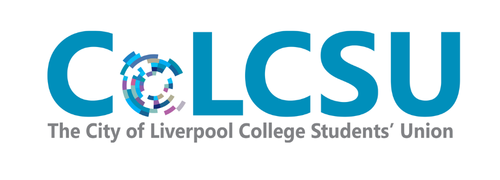

These are the online spaces for SEND Students’ Network members. Most students talk to us on: Instagram TikTok Discord WhatsApp Community Our Microsoft Teams channels are still open for anyone who likes a more organised and structured space.
We’re expanding beyond Microsoft Teams. Instagram, TikTok, Discord and our WhatsApp Community will be available here soon.